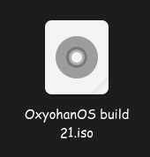

Essa build foi uma tentativa de fazer um instalador funcional via script bash só que infelizmente não deu certo porque o grub falhava (MALDITO GRUB!!!!)
Ele só tinha uma interfaçe SECA SECA SECA com poucas etapas (Usuário, Grub, Partição e Instalação)
Essa build virou lost media e por muito temo nunca consegu achar-la e ve-la em uma vm mas essas são as únicas imagens dela até então

Essa imagem é dela configurada com os temas e com o terminal do XFCE aberto
Em 29 de agosto de 2026 enquanto JohnzinOmochain estava fazendo a wkipédia do
Oxyohan, ele conseguiu achar essa build em seus arquivos perdidos no computador

Ela foi achada em uma pasta que seria transportada para um Ventoy só que a Build 21 não foi transportada por algum motivo e semanas depois JohnzinOmochain à encontrou perdida quando baixou a build 12 e 18 no repositório do Github. E quando JohnzinOmochain viu isso ele decidiu uploadar no Github IMEDIATAMENTE no repositório na página da build. Assim finalmente deixando de ser Lost Media e distribuida para todos